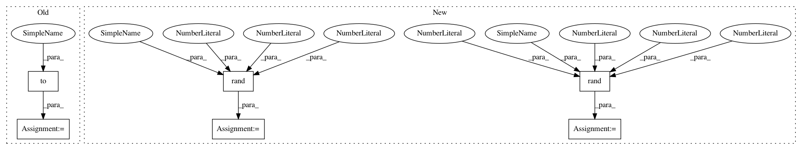

a828315185a9dc8b21ec8e5dbead9044caf0d3a2,test/geometry/test_linalg.py,TestRelativeTransformation,test_gradcheck,#TestRelativeTransformation#Any#Any#,313
Before Change
@pytest.mark.parametrize("batch_size", [1, 2, 5])
def test_gradcheck(self, device, batch_size):
trans_01 = identity_matrix(batch_size).to(device)
trans_02 = identity_matrix(batch_size).to(device)
trans_01 = utils.tensor_to_gradcheck_var(trans_01) // to var
trans_02 = utils.tensor_to_gradcheck_var(trans_02) // to var
After Change
assert_allclose(actual, expected, atol=1e-4, rtol=1e-4)
class TestTransformBoxes:
def test_transform_boxes(self, device, dtype):
boxes = torch.tensor([[139.2640, 103.0150, 397.3120, 410.5225]], device=device, dtype=dtype)
expected = torch.tensor([372.7360, 103.0150, 114.6880, 410.5225], device=device, dtype=dtype)
trans_mat = torch.tensor([[[-1., 0., 512.],
[0., 1., 0.],
In pattern: SUPERPATTERN
Frequency: 3
Non-data size: 6
Instances
Project Name: arraiy/torchgeometry
Commit Name: a828315185a9dc8b21ec8e5dbead9044caf0d3a2
Time: 2020-12-22
Author: sj8716643@126.com
File Name: test/geometry/test_linalg.py
Class Name: TestRelativeTransformation
Method Name: test_gradcheck
Project Name: arraiy/torchgeometry
Commit Name: a828315185a9dc8b21ec8e5dbead9044caf0d3a2
Time: 2020-12-22
Author: sj8716643@126.com
File Name: test/geometry/test_linalg.py
Class Name: TestComposeTransforms
Method Name: test_gradcheck
Project Name: arraiy/torchgeometry
Commit Name: a828315185a9dc8b21ec8e5dbead9044caf0d3a2
Time: 2020-12-22
Author: sj8716643@126.com
File Name: test/geometry/warp/test_homography_warper.py
Class Name: TestHomographyWarper
Method Name: test_gradcheck